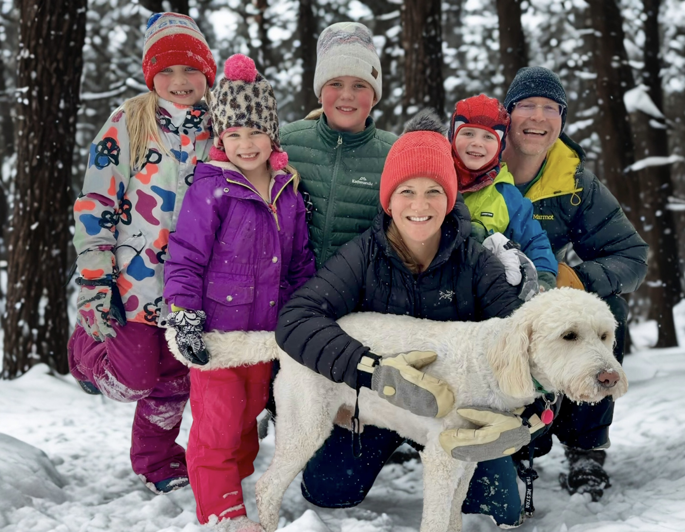

Early Voting NOW OPEN! June 2-6
Fargodome, Ramada, or Fargo Parks Sports Center
Election Day June 9!

|
I'm running for Fargo Park Board because I want to contribute my professional experience, passion for community service, and love for outdoors to the continued success of our community.
Having grown up in Fargo, my connection and commitment to this community run deep. Fargo shaped me, and now I'm ready to give back! Throughout my career I have honed my ability to build consensus to move solutions forward, and I would be honored to bring that leadership to the Fargo Park Board. |
My Vision
Fargo Parks provides immense value to the health and wellbeing of our residents and contributes to the foundation for meaningful economic community development, making Fargo an attractive place to live and hard place to leave!
I aim to strengthen social cohesion and elevate transparency in local government decision-making. As a responsible steward of our tax payers’ dollars, I will ensure the Fargo Parks policies and projects benefit the entire community.
My Focus
I believe our city leadership needs to be intentional about elevating the voices of residents, businesses, and non-profits so we can all work together to make our community great. Our community members are our greatest resource for finding innovative solutions to problems and creating exciting opportunities for growth.
|
 |
About MeI live in Fargo with my husband and four children, ages six to eleven. I am a proud graduate of Fargo South High School, and I earned a B.A. in Communication Studies from University of Minnesota and a law degree from University of Denver Sturm College of Law. I have served on the Board of Directors for Sollera (fka Rape and Abuse Crisis Center) since 2021, and I enjoy volunteering for local nonprofit organizations, especially those providing food and shelter to our community’s unhoused populations. |
My Leadership Style
As a lawyer with over 15 years of senior leadership experience in consumer protection and risk management, I have spent my career championing transparency, strengthening public trust, and ensuring systems work for the people they are meant to serve. I lead through coalition building, diplomacy, and uniting stakeholders around shared accountability.
Thank You for Supporting My Campaign!

|
Make a donation directly here! Payments are processed through Square. Name and address are required for mandatory record‑keeping purposes. If you would like to pay by check instead, make a check payable to "Friends of Emily May" and mail it to: Emily May, P.O. Box 2451, Fargo, ND 58108 |
I'd love to hear from you!
Questions? Want to help campaign? Want a yard sign? Send me a message!
Media Links
- FMWF Voter Guide – Fargo Park Board Candidate Answers & Videos
-
Women League of Voters & The Forum Voter Guide – Fargo Park Board Commissioner
- Joel Heitkamp News & Views 5.26.26 – Radio Interview
- Fargo Forum Editorial 5.23.26 – Emily Secor May Top Candidate Choice for Fargo Park Board
- League of Women Voters 5.7.26 – Fargo Park Board Candidate Forum
- High Plains Reader 4.25.26 – Fargo Park Board Candidate Interviews
- Rocky's Downtown Hour 4.10.26 – Radio Interview
- Fargo Forum 3.26.26 – Candidacy Announcement